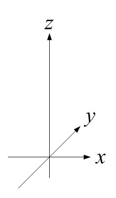
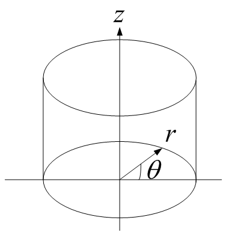
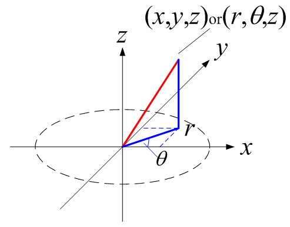

広告
円筒座標（円柱座標）
直交座標と円筒座標の座標変換について述べます。変数はそれぞれ下記が用いられます。
直交座標(x, y, z)
円筒座標(r, q, z)


円筒座標(r, q, z) ⇒直交座標(x, y, z)
円筒座標を直交座標に変換する場合です。変数は下記で表されます。


ベクトルの変換は次式となります。

作用素の変換は次式となります。

直交座標(x, y, z) ⇒円筒座標(r, q, z)
直交座標を円筒座標に変換する場合です。変数は下記で表されます。

ベクトルの変換は次式となります。

作用素の変換は次式となります。

また、

従って、

| prev | | | top | | | next |